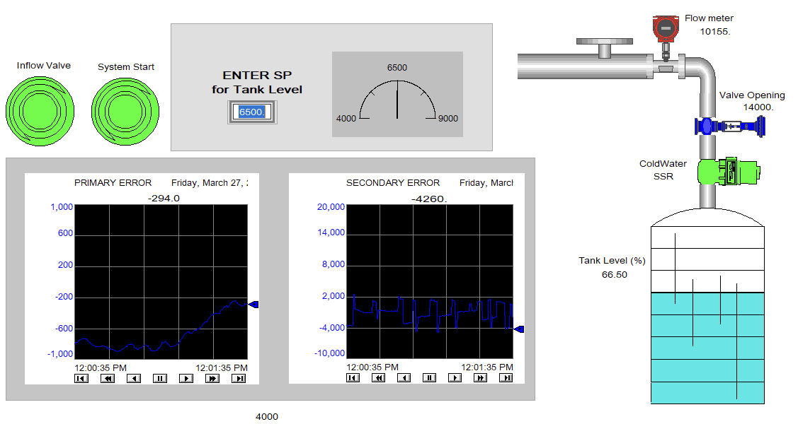
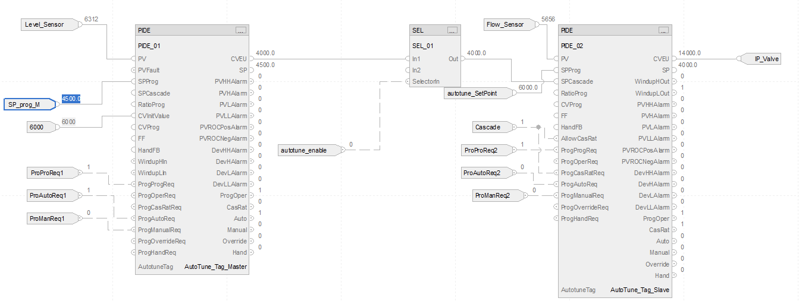

Project Case Study · Winter 2026
Cascaded PIDE Level Control System with FactoryTalk HMI
A water tank that fills to whatever level you ask for and holds it there, even when the water supply gets unpredictable. I built the control logic on an Allen-Bradley PLC and a matching operator screen in FactoryTalk View, so you can type in a target and watch the system chase it. It started as a course project I worked through with a lab partner.

The idea
Holding a tank at a steady level sounds easy until the water supply pressure changes on you. A basic controller only reacts after the level has already drifted off target. The trick I used here is cascade control, which is really just two controllers working as a team. One keeps an eye on the tank level and decides how much inflow it wants. The other takes that request and works the valve to deliver exactly that flow. Because the valve controller reacts quickly, it catches supply changes before they have a chance to move the tank. It is the same approach you find on real plant equipment like boiler drums and feedwater systems.
How it works
On the PLC, both controllers are built in Studio 5000 using function blocks. The level controller passes its target down to the flow controller, which is the one actually driving the valve. Everything is scaled into real units, so the screen reads level as a percentage and flow as a proper number instead of raw sensor counts.

Tuning it
Each controller has to be tuned so it responds well without overreacting. I used the PLC's built-in autotuning, starting with the fast flow loop and then the slower level loop, since the order matters in a cascade. After tuning, I set a target and watched the tank climb, nudge just past the line, and settle. Dialing the level controller back to gentler settings traded a little speed for a smoother ride with almost no overshoot, which is a clear way to see the usual tradeoff between fast and steady.
The operator screen
The FactoryTalk screen is the part someone would actually use day to day. There are start and stop buttons that turn green or red, a box to type in the target level, a tank that fills and drains as you watch, and live readouts for flow, valve opening, and level. Two trend graphs plot the error for each loop, so you can literally watch the controllers settle toward zero. I also worked through backing the project up and restoring it, which is the unglamorous but important side of real plant work.
What this shows
A full trip from an idea to a working station: designing the cascade, programming it on a real Allen-Bradley PLC, tuning it by feel and by the numbers, and wrapping it in a screen someone could run without ever opening the code.